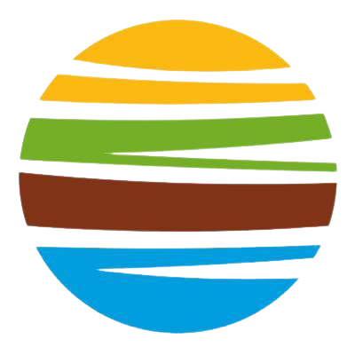

Qui suis-je ?
Bonjour,
Je m'appelle Chaima Ouertani et j'ai 20 ans. De nature curieuse et créative , la programmation a été pour moi une zone de jeu avec des milliers de possibilité , de direction
et de solution. Il s'est très vite imposé dans ma vie comme passion. Ainsi, je suis en BTS SIO option slam et j'ai pour vocation de devenir développeur.
Mon parcours
Lycee Parc des loges (2019-2022)
Actuellement en 2ème année BTS SIO lycée Parc des Loges, option Solutions
Logicielles et Applications Métiers (SLAM), 91000 Evry.
Lycee Jacques Prevert (2017-2019)
Baccalauréat Professionnel Systèmes Numériques option Réseaux
Informatiques et Systèmes Communicants (RISC). Lycée des métiers
Jacques Prévert, 77380 Combs-la-Ville.
Mes expériences

ISTEC 2022
Istec et une entreprise specialiser dans le batiment. Durant mon stage de 5 semaine j'ai eu a realiser un site
vitrine en autonomie.
VIVESCIA 2021
Vivescia service groupe est une externalité chargée de répondre au besoin de la maison mère.
J'ai été affecté au service des IT delivery Manager et j'ai porter mon assistance au service de maintenance
HOBART 2018 - 2019
Hobart est une entreprise de vente et de maintenance de matériel de cuisine professionnel. J'ai eu l'occasion de rejoindre leur service
de maintenance ou j'ai pu apprendre le métier ainsi que contribuer a leur travail.
New PC 2017 - 2018
New pc est un commerce de réparation de matériel informatique. Suite à ce stage j'ai beaucoup appris sur la manière
dont fonctionne les machines ainsi que la façon de résoudre les problèmes.
Compétences
Langue / Language de programmation :
Language programmation :
Java , python , sql , php , html , css , javascript , xml , bash
Langue :
Francais , Anglais , Espagnol , Arabe
Compétences techniques :
création de site web, mise en place de VM, gestion de
bases de données, active directory, sauvegarde serveur, diagnostic d’un
ordinateur, résolution de problèmes, installation et configuration de OS,
changement de pièces d’une machine, relation client
Outil / OS :
VMware, virtualbox, Arduino,
Ubuntu, Debian 9, Raspberry pi, OpenOffice, Windows 7/8/10, Linux, TeamViewer,
Pack office, GLPI, eclipse, notepad++, Visual Studio Code, easyphp, MySQL
Workbench, android studio, flutter.